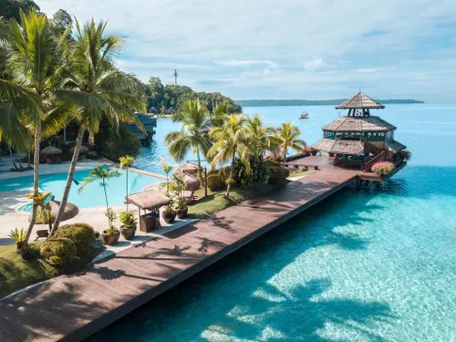
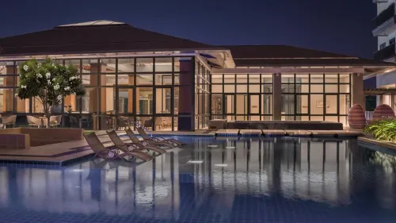
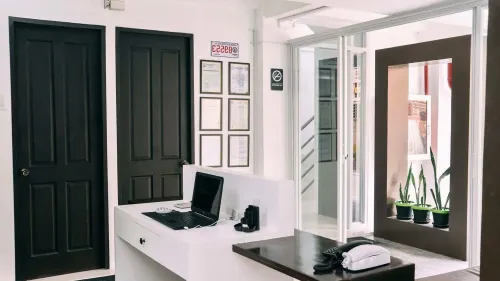

Luxury Travel in Davao: Resorts, Experiences, and High-End Adventures
Discover the Premium Side of Davao
Davao offers exclusive, high-end experiences, perfect for honeymooners, VIP travelers, and luxury seekers. From private island resorts to fine dining and personalized tours, Davao is a hidden gem for those seeking premium experiences. Experience the best of luxury in Davao, from private beach villas to world-class dining!

🏝️ Pearl Farm Beach Resort (Samal Island)
Pearl Farm Beach Resort, a distinguished 4-star establishment, is idyllically situated on Samal Island, overlooking the expansive Davao Gulf in the Philippines. This luxurious resort is celebrated for its unique and captivating accommodations, most notably its exquisite oceanfront villas that are elegantly built on stilts, offering unparalleled views and direct access to the turquoise waters below. Beyond its stunning architecture, the resort provides guests with an immersive pearl farming experience, allowing them to learn about and witness the cultivation of pearls. Complementing its natural beauty and unique offerings are its world-class spa facilities, designed to provide ultimate relaxation and rejuvenation through a variety of therapeutic treatments and wellness programs.

🏨 Dusit Thani Davao
Dusit Thani Residence Davao is a premier luxury hotel and residence complex situated in the vibrant Buhangin district of Davao City. This sophisticated establishment offers a blend of upscale hotel accommodations and elegant residential units, catering to discerning travelers and long-term guests alike. The complex is designed to provide an exceptional living experience, combining modern amenities with the renowned Thai hospitality that the Dusit Thani brand is globally recognized for. Guests can expect top-tier service, exquisite design, and a convenient location within one of Davao's key districts.

🏡 The Strand Davao
The Strand Suites and Dormitel is a budget-friendly 2-star hotel located in the Bajada district of Davao City, Philippines. It provides accessible and affordable accommodation options for travelers seeking value without compromising on essential amenities. Guests can enjoy the convenience of complimentary WiFi throughout the property and the added benefit of free private parking, making it an attractive choice for those traveling by car or looking to stay connected during their visit to Davao City.
Reference: davaodelnorte-luxury-places